Traducción automática
Este artículo se tradujo automáticamente a partir de la versión original en inglés.
Ingeniería de contexto para agentes de IA: ventanas de contexto, memoria, herramientas y límites
Resumen rápido
La ingeniería de contexto es el proceso mediante el cual se determina qué ve el modelo en el momento de tomar una decisión: instrucciones, ejemplos, conocimiento, memoria, habilidades, herramientas y límites. La mayoría de los agentes en entornos de producción funcionan bien o fallan precisamente en esta capa. A continuación se presenta el esquema al que siempre vuelvo, con los patrones que realmente utilizo.
El mismo agente que supera con éxito una demostración de 30 minutos puede colapsar ya en el tercer día en producción. Casi siempre, la falla no tiene nada que ver con el modelo, sino todo con lo que había en el contexto cuando tomó la decisión errónea: una memoria obsoleta, un documento ya sin relevancia, una descripción de herramienta desactualizada o instrucciones poco claras.
La ingeniería de contexto consiste en actuar para evitar que esto ocurra: diseñar intencionadamente qué verá el modelo antes de cada decisión, teniendo en cuenta ciertos límites. Este artículo explica detalladamente los patrones que yo empleo.
Por qué la ingeniería de contexto es importante para los agentes de IA
Un agente de soporte al cliente funciona durante tres semanas y gestiona 200 tickets. Posteriormente, comienza a generar detalles del producto ficticios, a confundir a los clientes y a llamar a las APIs incorrectas. El modelo no empeoró; fue el contexto el que lo hizo.
Cuatro cosas que cambiaron en 2025 y que hacen que esto sea más problemático de lo que solía ser. Los agentes dejaron de ser chatbots y comenzaron a tomar acciones, lo que significa que una mala decisión relacionada con el contexto puede afectar todo un plan de diez pasos en lugar de generar solo una respuesta defectuosa. La memoria centralizada y estándares como MCP permiten cargar el contexto personal de forma segura, pero solo si se diseña correctamente la capa correspondiente; sin una gestión adecuada, se pueden filtrar datos personales sensibles o comprometer la seguridad. La recuperación híbrida, el reordenamiento de resultados y la recuperación basada en grafos han madurado, lo que reduce las alucinaciones y el consumo de tokens, siempre y cuando las consultas se dirijan realmente a la estrategia adecuada. Además, la mayoría de los proyectos piloto relacionados con agentes que no avanzan lo hacen por problemas en el diseño del contexto y la gestión, no por deficiencias en la calidad del modelo. Una capa de contexto bien diseñada es lo que los libera de estos obstáculos.
Conceptos clave para principiantes
Algunos términos que aparecen a lo largo del artículo:
- Ventana de contexto: la memoria de trabajo del modelo. Es la cantidad máxima de texto (en tokens) que puede procesar en una sola decisión. Si se supera este límite, el modelo falla o olvida la parte inicial.
- Tokens: la unidad en la que se divide el texto. Aproximadamente, 1,000 tokens equivalen a 750 palabras.
- Presupuesto de atención: los modelos de lenguaje prestan atención a cada par de tokens; por lo tanto, con n tokens existen n² relaciones. A medida que aumenta el contexto, este presupuesto se agota, y los tokens intermedios reciben menos atención que los del principio y el final.
- Embeddings: representaciones numéricas del texto. Permiten realizar búsquedas por significado, de modo que una consulta como “perro” puede encontrar “cachorro”.
- JSON Schema: un método estándar para describir la estructura de los datos JSON. Se utiliza para obligar al modelo a generar campos específicos, como
{"answer": "...", "citations": [...]}. - MCP (Model Context Protocol): un estándar abierto que permite a los modelos de IA comunicarse con datos y herramientas externas a través de una interfaz común. Pensemos en él como un puerto USB para conectar un agente a sus archivos locales, bases de datos o Slack.
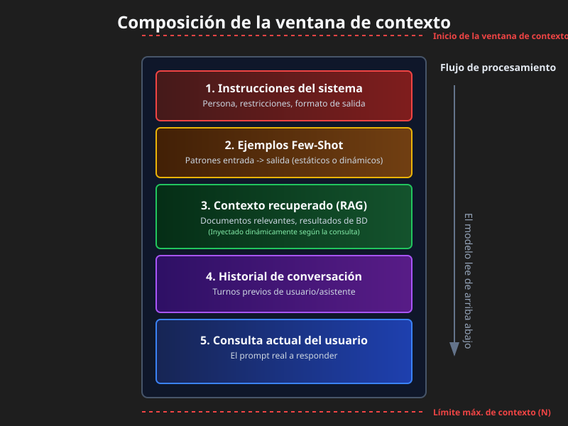
¿Qué es la capa de contexto?
Un pipeline junto con una política que selecciona y estructura las entradas por paso, aplica controles (formato, seguridad, políticas) y suministra al modelo el contexto justo y en el momento adecuado.
Imagínala como una línea de montaje que prepara exactamente lo que necesita el modelo para tomar una buena decisión.
El contexto es un recurso finito. Los modelos, al igual que los seres humanos con memoria de trabajo limitada, disponen de un presupuesto de atención que se agota a medida que aumenta el contexto. Cada nuevo token consume parte de dicho presupuesto. El reto técnico radica en encontrar el conjunto más pequeño posible de tokens de alta relevancia que permitan obtener la respuesta deseada.
No existe una descomposición canónica única; diferentes equipos implementan arquitecturas distintas. La que yo utilizo se ve así:
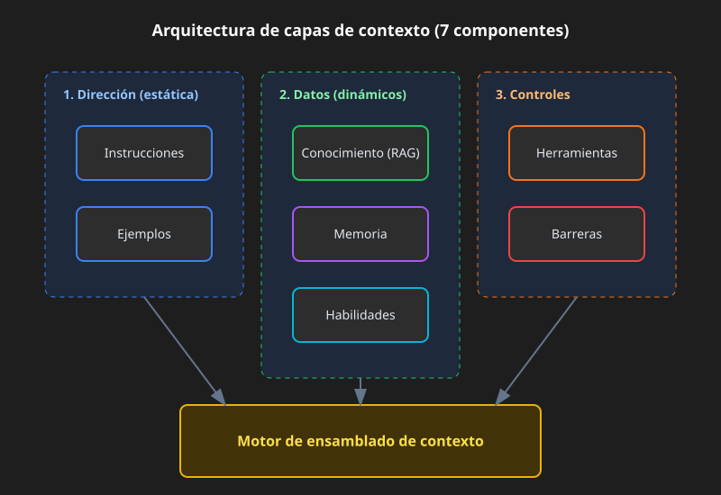
1) Instrucciones
Un contrato sólido para definir el comportamiento: rol, tono, restricciones, esquema de salida y objetivos de evaluación. Los modelos modernos respetan las jerarquías de instrucciones (sistema > desarrollador > usuario), por lo que se debe utilizar dicha jerarquía de forma explícita en lugar de incluir todo en un único bloque.
Se recurre a las instrucciones cuando se necesita una salida consistente (informes, SQL, llamadas a APIs, JSON) o cuando es necesario aplicar políticas específicas: eliminar información de identificación personal, rechazar solicitudes de funcionalidades no soportadas y nunca incluir URLs internas. Las prácticas más efectivas son las obvias: mantener los bloques relacionados con las políticas separados de las tareas del usuario, utilizar esquemas JSON para generar código determinista y dividir los mensajes entre el sistema, el desarrollador y el usuario, de modo que el modelo sepa de qué origen proviene cada instrucción.
Un ejemplo sencillo de un bloque de políticas:
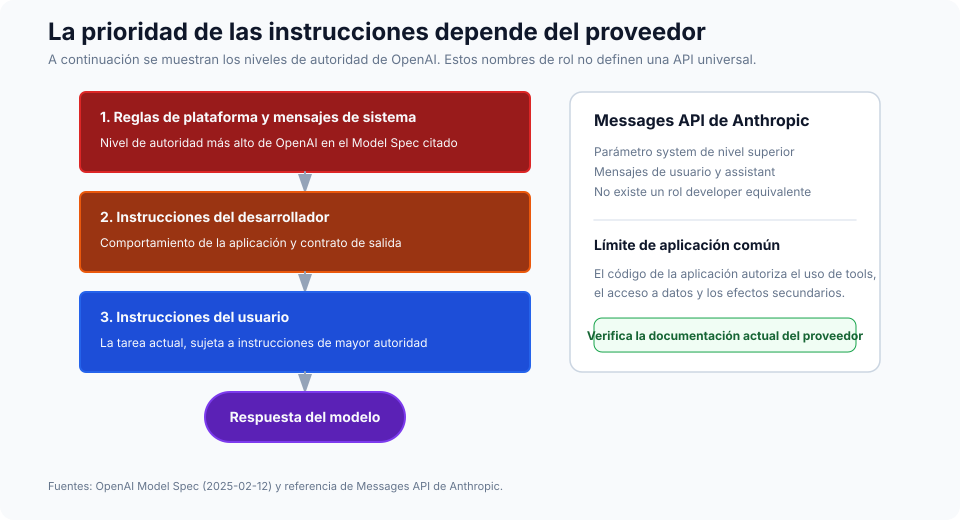
SYSTEM RULES
- Role: support assistant for ACME.
- Always output valid JSON per AnswerSchema.
- If a request needs account data, ask for the account ID.
- Never include secrets or internal URLs.
Razonamiento guiado por esquema (SGR)
La mejora más útil para “dar instrucciones al modelo” consiste en estructurar esas instrucciones de forma adecuada. Impulsa al agente mediante esquemas JSON que definen el plan, los argumentos de las herramientas, los resultados intermedios y la respuesta final. El modelo emite y consume JSON en cada paso, y tu código lo valida antes de que ocurra cualquier otra acción. Esto reduce la ambigüedad, hace que las reintentonas sean deterministas y mejora la seguridad, ya que los tipos y los campos obligatorios se aplican en todo el ciclo.
El flujo es sencillo. Define los esquemas para Plan, ToolArgs, StepResult, y FinalAnswer. En cada paso, el modelo genera un JSON que coincide con uno de ellos. Tu código se encarga de validarlo. Si la validación falla, se intenta una reparación automática (por ejemplo, completar los campos obligatorios faltantes con valores por defecto razonables). Si esa reparación también falla, se rechaza la solicitud y se registra el incidente.
En concreto: en lugar de que el modelo diga “Voy a buscar las solicitudes del cliente”, este genera
{
"action": "call_tool",
"tool": "search_tickets",
"args": { "customer_id": "A-123", "limit": 10 },
"expected_schema": "TicketList"
}
Y tu código realiza la validación. args de acuerdo con el esquema del herramienta antes de llamar a la API.
2) Ejemplos
Unos pocos pares de entrada-salida cortos que muestran el formato exacto, el tono y los pasos que debe seguir el modelo. Recurre a ejemplos cuando necesites un plantilla específica (tablas, JSON, SQL, llamadas a API) o cuando quieras una redacción específica para un dominio y un tono coherente.
Algunas reglas que sigo aprendiendo de nuevo. Muestra la estructura exacta de destino en tu demostración canónica, no una paráfrasis de ella. Combina ejemplos buenos con ejemplos malos: contrastar un error típico con el resultado deseado enseña más que dos salidas correctas. Acompaña tu JSON Schema con dos o tres demos cortas en lugar de una larga. Y manténlas breves: casi siempre, muchas demos pequeñas y enfocadas son mejores que un ejemplo extenso.
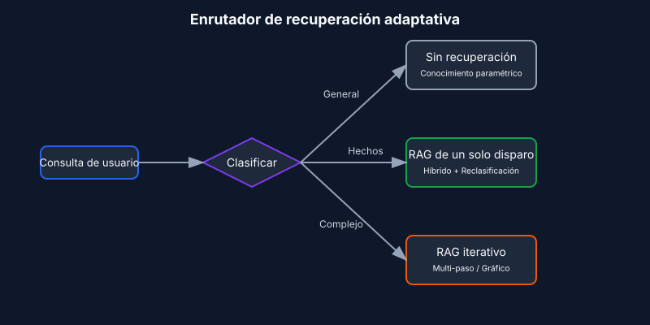
Los parámetros que realmente influyen en la calidad son menores de lo que sugiere la literatura existente. Realice el particionamiento por límites semánticos (párrafos, secciones) en lugar de un tamaño fijo: este es el único factor que determina si la calidad de la recuperación es buena o mala en documentos reales. Inicie el método top-k entre 10 y 20 para los enfoques híbridos, y posteriormente reduzca ese valor a entre 3 y 5. Utilice MMR con un valor de λ alrededor de 0.7 como valor predeterminado para garantizar diversidad. Además, incluya siempre referencias a las fuentes y citas directas en sus resultados, no porque el modelo genere información errónea sin ellas, sino porque son precisamente lo que permite auditar las respuestas.
4) Memoria
Contexto duradero a lo largo de turnos y sesiones. La memoria a corto plazo almacena el estado de la conversación. La memoria a largo plazo guarda datos del usuario y de la aplicación. La memoria episódica conserva los eventos. La memoria semántica contiene las entidades. Utiliza la memoria cuando necesites personalización y continuidad, o cuando varios agentes deban coordinarse a lo largo de días o semanas.
Los patrones que resisten el uso en entornos reales son: memorias de entidades (nombres, IDs, preferencias) con políticas explícitas de vencimiento; recuperación limitada desde un almacenamiento a largo plazo respaldado por vectores, pares clave-valor o un grafo; y la vinculación de la memoria con mecanismos de compresión, de modo que, cuando la memoria a corto plazo crece demasiado, se resuma en lugar de truncarse. El aspecto relacionado con la resumen se aborda en Estrategias de compresión de contexto [7].
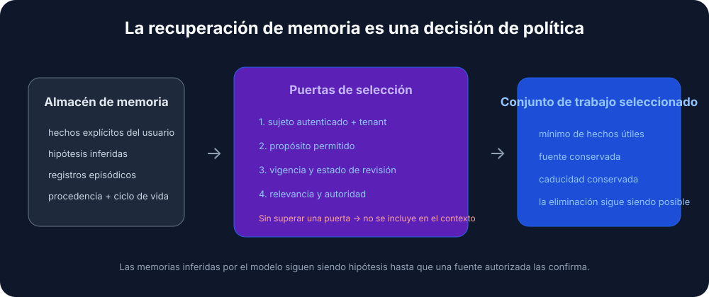
La política de vencimiento que utilizo por defecto es la siguiente:
- Preferencias: 365 días.
- Eventos episódicos: 90 días.
- Estado a corto plazo: se elimina al final de la sesión.
- Entidades: no tienen vencimiento, pero requieren validación periódica.
5) Habilidades
Experto en dominios componibles que los agentes pueden descubrir y cargar según sea necesario. De Anthropic’s Habilidades del agente El framework constituye el diseño de referencia para capturar conocimiento procedimental y compartirlo entre agentes.
Crear una habilidad para un agente es similar a elaborar una guía de incorporación para un nuevo empleado. — Anthropic Engineering Blog
Necesitas habilidades cuando requieres conocimientos especializados en un dominio concreto (manipulación de PDF, git, análisis de datos), cuando deseas procedimientos reutilizables entre agentes u organizaciones, o cuando quieres especializar a un agente sin tener que codificar sus comportamientos directamente en el prompt del sistema.
¿Qué es una habilidad?
Una habilidad es una carpeta organizada que contiene instrucciones, scripts y recursos que el agente puede descubrir y cargar cuando sea necesario:
- Un
SKILL.mdArchivo que contiene un nombre, una descripción (en el frontmatter en YAML) e instrucciones relativas a la habilidad. Archivos adicionales: referencias y plantillas que la habilidad puede incorporar. Código: Python u otros ejecutables que el agente puede ejecutar como herramientas.
Patrón de habilidades: divulgación progresiva
El principio que permite que las habilidades sean escalables es la divulgación progresiva: cargar información únicamente cuando sea necesaria. (Véase El principio de divulgación progresiva Abajo se muestra la versión general.) Al iniciar, solo los nombres y descripciones de las habilidades se encuentran en el contexto; esto es suficiente para que el agente sepa qué opciones están disponibles. El archivo SKILL.md completo se carga únicamente cuando se activa la habilidad correspondiente. Los archivos a los que se hace referencia de forma más profunda se cargan solo cuando la habilidad activada los necesita.
Esto implica que el contenido de las habilidades es, en la práctica, ilimitado. El agente no paga por el contexto que no utiliza.
┌─────────────────────────────────────────────────────────┐
│ Context Window │
├─────────────────────────────────────────────────────────┤
│ System Prompt │
│ ├── Core instructions │
│ └── Skill metadata (name + description only) │
│ • pdf: "Manipulate PDF documents" │
│ • git: "Advanced git operations" │
│ • context-compression: "Manage long sessions" │
├─────────────────────────────────────────────────────────┤
│ [User triggers task requiring PDF skill] │
│ │
│ → Agent reads pdf/SKILL.md into context │
│ → Agent reads pdf/forms.md (only if filling forms) │
│ → Agent executes pdf/extract_fields.py (without loading)│
└─────────────────────────────────────────────────────────┘
Buenas prácticas para las habilidades
Las directrices de Anthropic se resumen en cuatro aspectos. Comience con la evaluación: ejecute al agente en tareas representativas, identifique las deficiencias y cree habilidades para subsanarlas. Organícelo para escalar: divida una tarea grande SKILL.md Guárdalos en archivos separados y mantén las rutas distintas cuando los contextos sean mutuamente excluyentes. Observa cómo el agente utiliza tus habilidades e itera en los nombres y descripciones hasta que la precisión al activarlas sea alta. Además, deja que el agente te ayude: pide a Claude que capture los enfoques exitosos para convertirlos en contenido de habilidades reutilizable.
Consideraciones de seguridad
Por definición, las habilidades introducen vulnerabilidades, ya que otorgan al agente nuevas capacidades a través de instrucciones y código. Instálalas únicamente desde fuentes en las que confíes. Realiza una auditoría antes de usarlas, incluyendo los archivos incluidos, las dependencias de código y cualquier conexión de red. Presta especial atención a las instrucciones que conectan la habilidad con servicios externos, ya que suele ser allí donde comienza la extracción de datos.
6) Herramientas
Llamadas a funciones que obtienen datos o realizan acciones: APIs, bases de datos, búsquedas, operaciones con archivos, uso del ordenador. Necesitas herramientas cuando necesitas efectos secundarios deterministas y fidelidad en los datos, o cuando organizas ciclos de planificar-llamar-verificar continuar.
Los patrones que suelo utilizar son la planificación basada primero en herramientas, con validadores posteriores a cada llamada, salidas estructuradas entre pasos y soluciones alternativas explícitas cuando las herramientas fallan (reintentar, luego reducir la calidad del resultado, y finalmente recurrir a intervención humana).
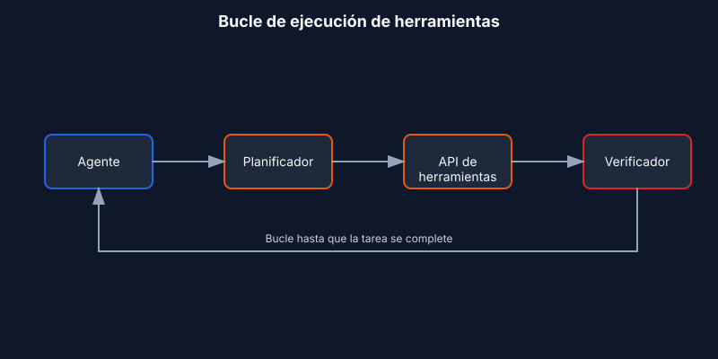
Tres conceptos sobre los que merece la pena ser preciso. “Idempotente” significa que se puede volver a ejecutar sin efectos secundarios (GET sí, POST o DELETE no). Las “postcondiciones” son las verificaciones que se realizan tras cada llamada: resultado no vacío, estado igual a “ok”, JSON válido. La “cadena de respaldo” es el orden en el que se actúa cuando surge un error: intentar de nuevo, luego funcionar de forma reducida, y finalmente pasar el caso a un humano.
Una nota sobre MCP
MCP se está convirtiendo en el estándar para la forma en que los agentes se conectan a herramientas y datos [6]. En lugar de escribir un wrapper de API personalizado para cada servicio, se ejecuta un servidor MCP para cada uno, y el agente descubre automáticamente las herramientas y recursos disponibles.
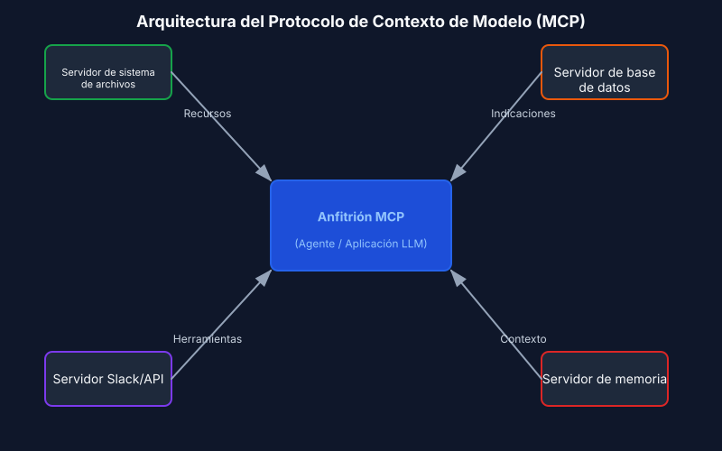
7) Límites de seguridad
Validación de entrada y salida, filtros de seguridad, defensa contra fugas de control, aplicación estricta de esquemas y políticas de contenido. Se necesitan límites de seguridad cuando se requiere cumplimiento normativo o integridad de la marca, así como cuando se desea obtener resultados correctamente tipados y un comportamiento seguro.
La estructura que funciona en producción: rieles programables (reglas de política más acciones), validadores de esquemas y semánticos (tipos, expresiones regulares, evaluaciones), y una política central con capacidades de observabilidad (paneles de control, pruebas de ataque).
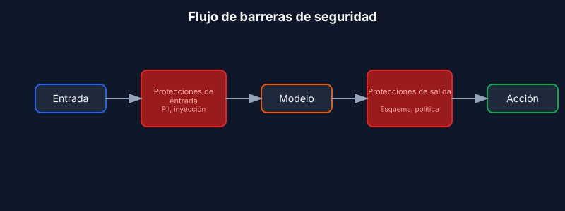
La decisión de reparar frente a rechazar es la que suelen cometer errores los equipos. En caso de violaciones del esquema, se realiza un intento automático de reparación; si este falla, se debe rechazar la solicitud indicando un error claro. Las violaciones de políticas exigen omitir por completo el intento de reparación: se debe rechazar de inmediato y proponer una alternativa segura.
Existen cuatro tipos comunes de protectores que cubren la mayoría de las necesidades en entornos de producción. Los protectores de entrada detectan datos personales, inyecciones de prompts y contenido tóxico antes de que el modelo los procese. Los protectores de salida garantizan el cumplimiento del esquema, las políticas de contenido y la coherencia factual. Los protectores de herramientas se encargan de la limitación de frecuencia de solicitudes, las verificaciones de permisos y los umbrales de costo. Por último, los protectores de memoria eliminan los datos personales antes de su almacenamiento y aseguran su vencimiento automático.
Ejemplo concreto: un bot de soporte respondiendo a un ticket
Esto es lo que reúne la capa de contexto cuando un cliente pregunta “¿Por qué mi clave API no funciona?”:
- Instrucciones: actuar como un asistente de soporte útil para ACME, citar fuentes y devolver información en formato JSON
{answer, sources, next_steps}- Ejemplos: dos pares cortos de tipo P→R que muestran el tono y la estructura JSON, uno relacionado con claves API y otro con facturación. - Conocimientos: busca en el centro de ayuda y en los manuales de operación del producto frases como “solución de problemas de claves API”; incluye citas relevantes.
- Memoria: nombre del cliente “Sam”, ID de cuenta “A-123”, plan “Pro”, última interacción “Se creó una clave API hace 3 días”.
- Habilidades: cargar el
ticket-handlingHabilidad en procedimientos de resolución de problemas, políticas de escalado y plantillas de solución. - Herramientas:
search_tickets(customer_id),check_api_key_status(key),create_issue(description). - Límites de seguridad: incluye los valores de las claves API en la respuesta; si el esquema falla, corrígelo una sola vez; si se viola alguna política (por ejemplo, una solicitud para eliminar datos de producción), recházala de forma educada.
El modelo recibe todo este contexto estructurado, genera una respuesta, y los límites de seguridad la validan antes de que llegue al cliente.
Análisis profundo de los fundamentos del contexto
Antes de que los patrones tengan sentido, es necesario comprender su estructura interna.
La anatomía del contexto
El contexto está formado por varios componentes distintos, cada uno con características y restricciones propias.
Los prompts del sistema definen la identidad del agente, sus restricciones y las pautas de comportamiento. Se cargan una sola vez al inicio de la sesión y permanecen activos durante toda la conversación. El reto radica en encontrar el equilibrio adecuado: lo suficientemente específicos como para orientar realmente el comportamiento, pero lo suficientemente flexibles como para permitir espacio para el juicio. Si se son demasiado estrictos, se implementan reglas rígidas y difíciles de modificar. Si, por el contrario, son demasiado generales, el modelo no dispone de señales concretas en las que basarse para actuar.
Organice los prompts en secciones diferenciadas utilizando etiquetas XML o encabezados de Markdown:
<BACKGROUND_INFORMATION>
You are a Python expert helping a development team.
Current project: Data processing pipeline in Python 3.9+
</BACKGROUND_INFORMATION>
<INSTRUCTIONS>
- Write clean, idiomatic Python code
- Include type hints for function signatures
- Add docstrings for public functions
</INSTRUCTIONS>
<TOOL_GUIDANCE>
Use bash for shell operations, python for code tasks.
File operations should use pathlib for cross-platform compatibility.
</TOOL_GUIDANCE>
Definiciones de herramientas: especifican las acciones que puede realizar el agente. Cada herramienta cuenta con un nombre, una descripción, parámetros y formato de retorno. Son las descripciones las que realmente guían su comportamiento. Las descripciones deficientes obligan al agente a adivinar; las buenas incluyen contexto de uso, ejemplos y valores predeterminados razonables. Principio de consolidación: si un ingeniero humano no puede determinar con certeza qué herramienta utilizar, el agente no logrará un mejor resultado. Ese es el indicador para fusionarlas o renombrarlas.
Documentos recuperados: incorporan el contenido relevante en tiempo de ejecución en lugar de cargar todo por adelantado. Este enfoque justo a tiempo permite mantener identificadores ligeros —rutas de archivo, consultas almacenadas, enlaces web— y cargar los datos reales únicamente cuando son necesarios.
Historial de mensajes: corresponde a la conversación entre el usuario y el agente, incluyendo consultas anteriores, respuestas y razonamientos. En tareas de larga duración, este historial puede llegar a ocupar casi todo el espacio disponible. También funciona como memoria temporal, donde los agentes registran el progreso y el estado de la tarea.
Salidas de la herramienta son los resultados de las acciones del agente: contenido de archivos, resultados de búsqueda, salida de comandos y respuestas de API. En las trayectorias típicas de los agentes, las observaciones acaban ocupando más del 80 % del contexto total. [4]. Ese número representa la presión que existen detrás de técnicas como el enmascaramiento de observaciones y la compactación.
Ventanas de contexto y mecánicas de atención
Los modelos de lenguaje calculan la atención mediante relaciones entre pares de tokens. Para n tokens, esto implica n² relaciones. A medida que el contexto aumenta, la capacidad del modelo para capturar esas relaciones se ve reducida.
Además, los modelos adquieren sus patrones de atención a partir de los datos de entrenamiento, los cuales están dominados por secuencias más cortas. Por lo tanto, el modelo dispone de relativamente poca experiencia con las dependencias a nivel de todo el contexto. El resultado final es un presupuesto de atención que disminuye a medida que crece el contexto.
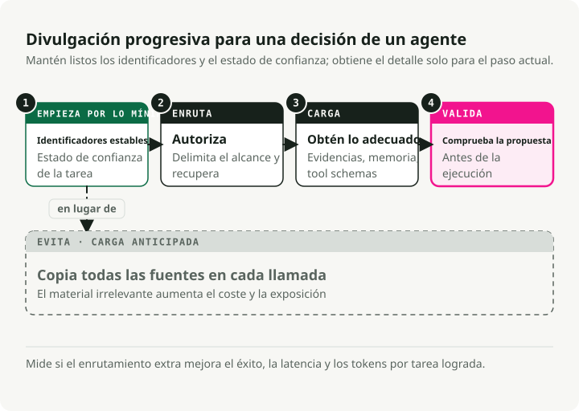
El principio de divulgación progresiva
La divulgación progresiva gestiona el contexto de forma eficiente al cargar la información únicamente cuando es necesaria. Al iniciar, los agentes cargan solamente los nombres y descripciones de las habilidades, lo cual es suficiente para saber cuándo una habilidad podría ser relevante. El contenido completo se carga únicamente cuando se activa para tareas específicas.
# Instead of loading all documentation at once:
# Step 1: Load summary
docs/api_summary.md # Lightweight overview
# Step 2: Load specific section as needed
docs/api/endpoints.md # Only when API calls needed
docs/api/authentication.md # Only when auth context needed
Calidad frente a cantidad de contexto
La suposición de que ventanas de contexto más grandes resuelven los problemas de memoria ha sido refutada empíricamente. La ingeniería de contexto consiste en encontrar el conjunto más pequeño posible de tokens de alto valor informativo.
Varias fuerzas impulsan la búsqueda de la eficiencia. El costo de procesamiento aumenta de manera desproporcionada con la longitud del contexto: no se duplica al duplicar los tokens, sino que crece exponencialmente en términos de tiempo y recursos computacionales. El rendimiento del modelo empeora cuando el contexto supera cierta longitud, incluso si técnicamente el marco de trabajo puede manejar más datos. Además, las entradas largas siguen siendo costosas, aun con el uso de caché de prefijos.
El principio rector es priorizar la información relevante sobre la exhaustividad. Se debe incluir solo lo necesario para tomar la decisión en cuestión, excluyendo todo lo demás.
Patrones de degradación del contexto
Los modelos de lenguaje presentan patrones de degradación predecibles a medida que aumenta el contexto. Conocer estos patrones permite diagnosticar fallos y diseñar sistemas resistentes.
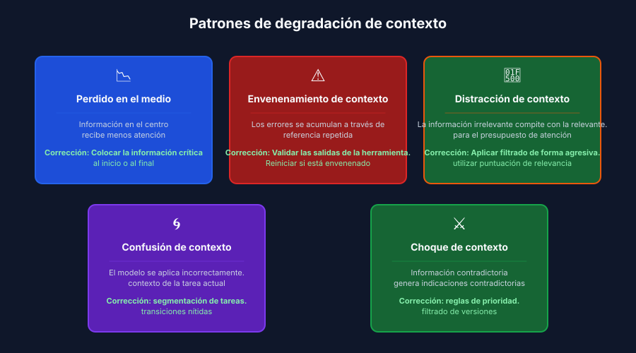
El fenómeno de pérdida en el medio
El patrón de degradación mejor documentado es el “perdido en el medio”, en el cual los modelos presentan curvas de atención en forma de U. [1]. La información situada al principio y al final del contexto recibe una atención fiable; en cambio, la información del medio presenta una precisión de recuperación un 10-40% más baja.
El mecanismo es concreto: los modelos destinan una cantidad enorme de atención al primer token (con frecuencia el token BOS) para estabilizar los estados internos, lo que genera un “sumidero de atención” que consume todo el presupuesto de atención disponible. [2]. A medida que el contexto aumenta, los tokens intermedios no logran obtener un peso de atención suficiente.
La solución práctica es colocar la información crítica al principio o al final del contexto. Utilice estructuras de resumen que muestren la información clave en posiciones donde la atención se concentre.
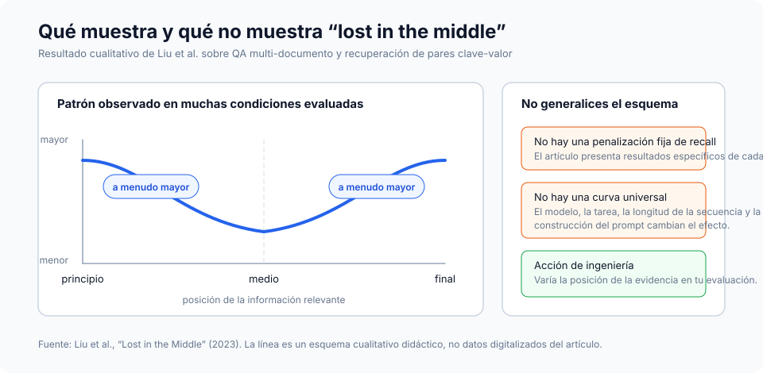
# Organize context with critical info at edges
[CURRENT TASK] # At start
- Goal: Generate quarterly report
- Deadline: End of week
[DETAILED CONTEXT] # Middle (less attention)
- 50 pages of data
- Multiple analysis sections
- Supporting evidence
[KEY FINDINGS] # At end
- Revenue up 15%
- Costs down 8%
- Growth in Region A
Para las instrucciones que no puedes permitirte perder bajo ninguna circunstancia, duplica su contenido tanto al principio como al final. Dado que los modelos prestan especial atención a ambos extremos, la misma instrucción en ambas posiciones recibe atención independientemente de la longitud del contexto. Esta es la solución adecuada para las restricciones del sistema que deben cumplirse siempre, los requisitos de formato de salida y las políticas de seguridad.
# Example: Duplicating critical instructions
[SYSTEM - START]
CRITICAL: Always respond in JSON format. Never include PII.
[... long context with documents, history, tools ...]
[SYSTEM - REMINDER]
CRITICAL: Always respond in JSON format. Never include PII.
Envenenamiento de contexto
El envenenamiento de contexto ocurre cuando las alucinaciones, errores o información incorrecta se introducen en el contexto y se acumulan mediante referencias repetidas. Una vez envenenado, el contexto genera bucles de retroalimentación que refuerzan la creencia errónea.
Por lo general, se produce a través de una de tres vías: salidas de herramientas que contienen errores o formatos inesperados, documentos recuperados con información incorrecta u obsoleta, y resúmenes generados por el modelo que introducen alucinaciones y luego persisten.
Se puede detectar por síntomas como: una calidad de salida deteriorada en tareas que anteriormente tenían éxito, agentes que utilizan herramientas o parámetros incorrectos, y alucinaciones persistentes que sobreviven a los intentos de corrección.
La recuperación es mecánica: se debe truncar el contexto hasta antes del punto de envenenamiento, indicar explícitamente que ha habido envenenamiento y solicitar una reevaluación, o reiniciar con un contexto limpio que solo conserve la información verificada.
Distracción de contexto
La distracción por contexto surge cuando este se vuelve excesivamente largo, lo que hace que el modelo se enfoque de forma excesiva en la información proporcionada, en detrimento de lo aprendido durante el entrenamiento. Las investigaciones demuestran que incluso un único documento irrelevante puede reducir el rendimiento en tareas que involucran documentos relevantes. [8]El efecto sigue una función escalonada: la presencia de cualquier elemento distractor provoca una degradación del rendimiento.
La idea clave es que los modelos no pueden ignorar el contexto irrelevante. Deben prestar atención a todo lo que se les proporciona, y esa misma atención se convierte en una distracción, incluso cuando la información irrelevante es claramente inútil.
Las medidas para mitigarlo son el filtrado por relevancia antes de cargar los documentos, el uso de nombres espaciales para facilitar el paso por alto de secciones irrelevantes, y la pregunta de si la información realmente necesita estar en el contexto o puede obtenerse mediante una llamada a una herramienta.
Confusión de contexto
La confusión de contexto ocurre cuando la información irrelevante influye en las respuestas de manera que degrada su calidad. Si se incluye algo en el contexto, el modelo debe prestarle atención, lo que implica que puede incorporar información irrelevante, utilizar definiciones de herramientas destinadas a tareas diferentes o aplicar restricciones provenientes de otro contexto.
Señales a observar: respuestas que abordan el aspecto incorrecto de la consulta, llamadas a herramientas que parecen adecuadas para otra tarea, y resultados que mezclan requisitos de múltiples fuentes.
La solución consiste en una segmentación explícita de tareas (cada tarea recibe su propio ventana de contexto), transiciones claras entre contextos y un manejo de estado que aísla cada contexto.
Se produce un conflicto de contexto cuando la información acumulada entra en contradicción directa, generando indicaciones opuestas. Esto es diferente del “envenenamiento” de datos, en el que solo hay un elemento incorrecto; en el caso de los conflictos, varios elementos correctos se contradicen entre sí.
Fuentes comunes incluyen la recuperación de información desde múltiples fuentes que contienen datos contradictorios, conflictos de versión (información desactualizada y actual presente ambos en el contexto) y conflictos de perspectiva (puntos de vista válidos pero incompatibles).
Para resolverlo, se emplean marcadores explícitos de conflicto, reglas de prioridad que determinan qué fuente tiene prelación, y filtrado por versión que excluye la información obsoleta.
Umbral de degradación específico del modelo
La investigación proporciona datos concretos sobre el momento en que comienza la degradación. La longitud de contexto efectiva, es decir, aquella en la que los modelos mantienen un rendimiento óptimo, suele ser significativamente menor que el límite máximo anunciado. [3]:
| Modelo | Contexto máximo | Contexto efectivo | Notas de degradación |
|---|---|---|---|
| GPT-4 Turbo | 128 K tokens | ~32K tokens | La recuperación de datos empeora después de 32K, y la precisión se ve afectada cuando se superan los 64K. |
| GPT-4o | 128 K tokens | ~8K tokens | La precisión del NIAH complejo disminuye de un 99 % a un 70 % a 32 K. |
| Claude 3.5 Soneto | 200 K tokens | ~4K tokens | La precisión del NIAH complejo disminuye de un 88 % a un 30 % a 32 K. |
| Gemini 1.5 Pro | 1 M de tokens | ~128K tokens | 99 % de recuperación en NIAH a 1 millón de tokens, mejor rendimiento para contextos largos |
| Gemini 2.0 Flash | 1 millones de tokens | ~32K tokens | La precisión del NIAH complejo disminuye de un 94 % a un 48 % a 32 K. |
Fuentes: benchmark RULER [3], benchmark NoLiMa [9], informes técnicos de Google._El hallazgo principal de RULER [3]: Solo el 50 % de los modelos que afirman tener un contexto de 32 K+ mantienen un rendimiento satisfactorio con 32 K de tokens. Las puntuaciones casi perfectas en pruebas simples tipo “aguja en un pajar” no se traducen en una verdadera comprensión de contextos largos; las tareas de razonamiento complejo presentan una degradación mucho más pronunciada.
Estrategias de compresión de contexto
Nota de terminología: la compresión de contexto es un concepto amplio que engloba la resumenización (para el historial de conversaciones y la memoria), el enmascaramiento de observaciones (para las salidas de las herramientas) y el recorte selectivo. [5]. La resumen de memoria mencionado en el Memoria La sección corresponde a una aplicación concreta de estas estrategias más amplias de compresión.
Cuando las sesiones de los agentes generan millones de tokens de historial de conversación, la compresión deja de ser opcional. El enfoque ingenuo consiste en aplicar una compresión agresiva para minimizar el número de tokens por solicitud. El objetivo de optimización adecuado es el número de tokens por tarea. [4]: número total de tokens consumidos para completar la tarea, incluidos los costes por volver a obtener datos cuando la compresión pierde información crítica.
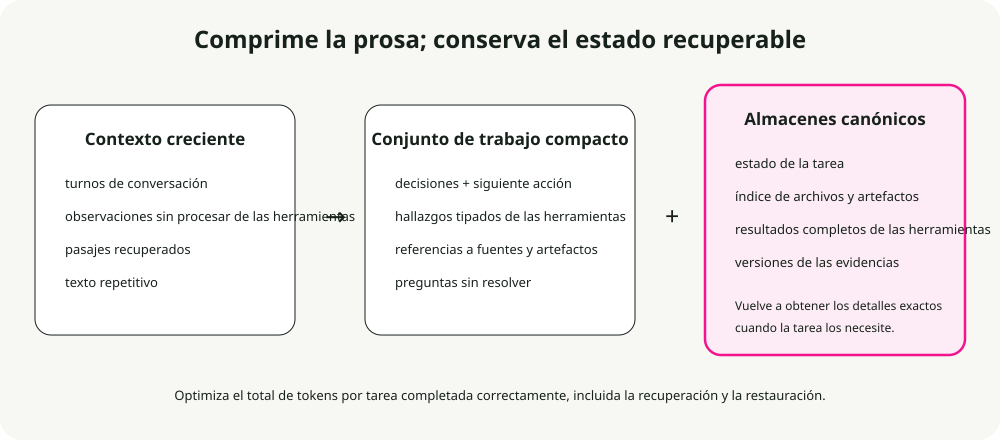
Cuándo se necesita compresión
Active la compresión cuando las sesiones de los agentes superen los límites del marco de contexto, cuando comiencen a “olvidar” qué archivos han modificado, al depurar una larga sesión de programación que se ha extendido durante horas, o cuando el rendimiento disminuya de forma notable en conversaciones prolongadas.
Tres enfoques listos para producción
Resumen iterativo anclado mantiene un resumen estructurado y persistente con secciones explícitas dedicadas a la intención de la sesión, las modificaciones de archivos, las decisiones y los pasos siguientes. Cuando se activa la compresión, solo se resume el segmento recién truncado y se integra en el resumen existente. Su eficacia se debe a que la estructura obliga a la conservación de información: las secciones dedicadas funcionan como una lista de verificación que el resumidor debe completar, lo que evita cambios silenciosos en el contenido.
## Session Intent
Debug 401 Unauthorized error on /api/auth/login despite valid credentials.
## Root Cause
Stale Redis connection in session store. JWT generated correctly but session could not be persisted.
## Files Modified
- auth.controller.ts: No changes (read only)
- config/redis.ts: Fixed connection pooling configuration
- services/session.service.ts: Added retry logic for transient failures
- tests/auth.test.ts: Updated mock setup
## Test Status
14 passing, 2 failing (mock setup issues)
## Next Steps
1. Fix remaining test failures (mock session service)
2. Run full test suite
3. Deploy to staging
Compresión opaca: genera representaciones comprimidas optimizadas para mantener la fidelidad en la reconstrucción. Permite los ratios de compresión más altos (99%+), pero sacrifica la interpretabilidad. Úsala cuando lo importante es ahorrar el máximo número de tokens y la recuperación posterior es económica.
Resumen regenerativo completo: crea un resumen estructurado y detallado para cada proceso de compresión. El resultado es legible, aunque los detalles pueden deteriorarse con ciclos repetidos de compresión.
Comparativa de compresión
Investigación realizada por Factory.ai [4] Comparación de estrategias de compresión en sesiones reales de agentes en producción:
| Método | Relación de compresión | Puntuación de calidad | Mejor para |
|---|---|---|---|
| Iteración anclada | 98.6% | 3.70/5 | Sesiones prolongadas, seguimiento de archivos |
| Regenerativo | 98.7% | 3.44/5 | Eliminar los límites de fase |
| Opaco | 99.3% | 3.35/5 | Máximo ahorro, sesiones cortas |
Levantamiento de métricas:
- Relación de compresión (98,6%): porcentaje de tokens eliminados. Una relación del 98,6% significa que, de 100.000 tokens de la historia, solo quedan 1.400.
- Puntuación de calidad (3,70/5): se mide mediante evaluaciones basadas en pruebas: tras la compresión, al agente se le hacen preguntas que requieren recordar detalles específicos de la historia truncada (qué archivos modificamos, cuál fue el mensaje de error). Una puntuación de 3,70/5 indica que el agente respondió correctamente aproximadamente el 74 % de las pruebas.
- 0,7 % más de tokens: al comparar el método iterativo anclado (98,6 %) con el opaco (99,3 %), la diferencia es del 0,7 %. En una sesión de 100.000 tokens, esto equivale a 1.400 tokens frente a 700. Los 700 tokens adicionales (0,7 % del total original) aportan 0,35 puntos de calidad más (3,70 frente a 3,35), lo que supone una recuperación significativamente mejor de los detalles críticos para la tarea.
El problema de la huella de artefactos
La integridad de la huella de artefactos es la dimensión más débil entre todos los métodos de compresión, con una puntuación de 2,2-2,5 sobre 5,0. Los agentes de programación necesitan saber qué archivos han creado, modificado o leído, y la compresión suele hacer que esta información se pierda.
Recomendación: implementar un índice separado de artefactos o un seguimiento explícito del estado de los archivos dentro de la estructura del agente, además de la resumen general.
Estrategias de activación de la compresión
| Estrategia | Punto de activación | Compromiso |
|---|---|---|
| Umbral fijo | Utilización del 70-80% | Sencillo, pero puede comprimirse de forma prematura. |
| Ventana deslizante | Mantener los últimos N turnos + resumen | Tamaño de contexto predecible |
| Basado en la importancia | Comprimir primero los elementos de baja relevancia. | Complejo, pero mantiene la señal intacta. |
| Límites de la tarea | Comprimir al finalizar la tarea | Resúmenes limpios, tiempos de ejecución impredecibles |
Evaluación basada en sondas
Las métricas tradicionales como ROUGE no logran capturar la calidad de compresión funcional. Un resumen puede obtener una puntuación alta en cuanto a superposición léxica, pero pasar por alto la única ruta de archivo que el agente realmente necesita.
Las métricas de evaluación basadas en pruebas miden la calidad de forma directa al plantear preguntas tras la compresión:
| Tipo de sonda | Qué se prueba | Pregunta de ejemplo |
|---|---|---|
| Recuperación | Retención de hechos | "¿Cuál era el mensaje de error original?" |
| Artefacto | Seguimiento de archivos | "¿Qué archivos hemos modificado?" |
| Continuación | Planificación de tareas | "¿Qué deberíamos hacer a continuación?" |
| Decisión | Cadena de razonamiento | "¿Qué decidimos respecto al problema de Redis?" |
Si la compresión conserva la información correcta, el agente responde adecuadamente. Si no es así, realiza conjeturas o genera alucinaciones.
Técnicas de optimización del contexto
La optimización de contexto amplía la capacidad efectiva mediante la compresión, el enmascaramiento, el caché y la particionación. Estas técnicas se basan en el Estrategias de compresión de contexto Arriba, se aplican de forma sistemática en entornos de producción. Al hacerlo correctamente, la optimización puede duplicar o triplicar la capacidad efectiva de contexto sin necesidad de utilizar un modelo más grande.
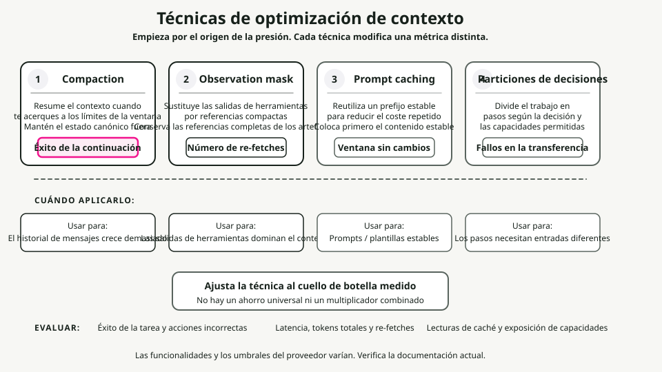
Estrategias de compactación
La compactación consiste en resumir el contenido del contexto cuando se acercan los límites, para luego reinicializar con dicho resumen. El objetivo es condensar la información de forma fidedigna, de modo que el agente pueda seguir funcionando con una degradación mínima.
El orden de prioridad que sigo es el siguiente: primero comprimir las salidas de las herramientas (sustituyéndolas por resúmenes), luego las conversaciones anteriores (resumir las interacciones previas) y, finalmente, los documentos recuperados (resumirlos si existen versiones recientes). Nunca se debe comprimir el prompt del sistema.
Lo que se debe conservar depende del tipo de contenido. Salidas de herramientas: mantener hallazgos, métricas y conclusiones; descartar las salidas brutales y verbosas. Turnos de conversación: conservar decisiones, compromisos y cambios de contexto; descartar información redundante. Documentos recuperados: conservar hechos y afirmaciones clave; descartar las explicaciones adicionales de apoyo.
Enmascaramiento de observaciones
Las salidas de las herramientas pueden representar más del 80 % del uso de tokens. [4]. Una vez que un agente ha utilizado la salida de una herramienta para tomar una decisión, conservar toda esa salida genera un valor cada vez menor.
Una matriz de decisión de enmascaramiento:
| Categoría | Acción | Razonamiento |
|---|---|---|
| Observaciones de la tarea actual | Nunca enmascarar | Esencial para el trabajo actual |
| Último turno | Nunca enmascarar | Inmediatamente relevante |
| Razonamiento activo | Nunca enmascarar | Pensamiento en curso |
| Hace 3+ turnos | Considera la posibilidad de aplicar enmascaramiento. | Propósito que probablemente se cumplió |
| Salidas repetidas | Siempre enmascarar | Redundante |
| Plantilla básica | Siempre enmascarar | Señal baja |
Optimización de la caché KV
La caché KV almacena los tensores de clave y valor calculados durante la inferencia. Al cachear solicitudes con prefijos idénticos se evita el recálculo, lo que reduce drásticamente los costes y la latencia.
Optimice para el caché colocando primero el contenido estable:
# Stable content first (cacheable)
context = [system_prompt, tool_definitions]
# Frequently reused elements
context += [reused_templates]
# Unique elements last
context += [unique_content]
Diseño para la estabilidad del caché: evite contenido dinámico como las marcas de tiempo en los prompts, utilice un formato consistente y mantenga la estructura estable entre sesiones.
Particionamiento del contexto
La optimización más agresiva consiste en dividir el trabajo entre subagentes con contextos aislados. Cada subagente funciona dentro de un contexto limpio centrado en su subtarea, sin cargar el contexto acumulado de otras subtareas.
Para la agregación: valide que todas las particiones se hayan completado, combine los resultados compatibles y resuma el resultado si este sigue siendo demasiado extenso.
Marco de decisión para la optimización
¿Cuándo optimizar? Cuando la utilización del contexto supere el 70 %, la calidad de las respuestas empeore en conversaciones prolongadas, los costes aumenten debido a contextos extensos o la latencia crezca con la longitud de la conversación.
Lo que aplicar depende de qué factor predomine. Si son los resultados de la herramienta los que predominan, se debe utilizar el enmascaramiento de observaciones. Si son los documentos recuperados los que dominan, es necesario realizar resúmenes o particionarlos. Si el historial de mensajes es el más relevante, se aplica la compactación junto con resúmenes. Cuando varios componentes tienen influencia similar, se combinan distintas estrategias.
Métricas objetivo razonables: una reducción del tamaño del contexto entre el 50 % y el 70 % con una degradación de calidad inferior al 5 %; un enmascaramiento que permita una reducción del 60 % al 80 % en las observaciones ocultas; y una optimización de la caché que logre una tasa de acierto del 70 % o superior para cargas de trabajo estables.
Cómo implementarlo (paso a paso)
Una guía práctica para trabajar con la capa de contexto. Comience de forma sencilla y añada complejidad solo cuando surjan problemas.
Paso 1: redactar el contrato
Defina qué debe hacer su agente y cómo debe comportarse. Escriba las políticas a nivel de sistema (rol, restricciones, reglas de seguridad) y las directrices a nivel de desarrollador (formato de salida, tono, requisitos de citación). Defina esquemas JSON para cada formato de salida: AnswerSchema, PlanSchema, StepResultSchema### Paso 2: elegir una estrategia de recuperación
Comience con una recuperación híbrida (BM25 más vectores) acompañada de un reordenador. A continuación, dirija el proceso según el tipo de consulta. El conocimiento general no requiere recuperación alguna. Los datos recientes o privados necesitan un enfoque RAG de un solo paso (híbrido más reordenamiento). Las consultas complejas y multifacéticas exigen un enfoque RAG iterativo (dividiéndolas en subconsultas).
Paso 3: diseñar la memoria
Separar el estado a corto plazo (estado de la conversación) del a largo plazo (hechos del usuario, historial). El estado a corto plazo almacena el estado de la conversación y las últimas interacciones, y se elimina al final de la sesión. El estado a largo plazo guarda las entidades del usuario, sus preferencias y los eventos puntuales. Establecer reglas de vencimiento: las preferencias duran 365 días, los eventos puntuales 90 días, y el estado a corto plazo solo es válido durante la sesión. Añadir procesamiento de anonimización de PII antes de almacenar cualquier dato.
Paso 4: especificar las herramientas
Defina firmas de herramienta claras que incluyan mecanismos de validación y estrategias de fallback. Para cada herramienta, redacte una documentación detallada, un esquema de entrada y un esquema de salida. Indique si es idempotente. Defina las condiciones posteriores al ejecución así como la cadena de fallback. Valide los argumentos de la herramienta contra el esquema antes de llamarla.
Paso 5: instalar guardrails
Añada validación de entrada y salida, filtros de seguridad y aplicación de políticas. Lista de verificación mínima:
- [ ] Redactar la PII (correos electrónicos, números de seguro social, tarjetas de crédito) antes del procesamiento.
- [ ] Validar todas las salidas contra JSON Schema.
- [ ] Bloquear intentos de inyección de prompts.
- [ ] Limitar la frecuencia de llamadas a las herramientas.
- [ ] Registrar todas las violaciones de políticas para fines de auditoría.
Paso 6: añadir capacidades de observabilidad y evaluaciones
Instrumenta la capa de contexto para poder depurarla. Rastrea qué fuentes de contexto se han cargado; los recuentos de tokens (entrada, salida, costo); las métricas de recuperación (consulta, top-k, fuentes citadas); las llamadas a herramientas (qué herramientas, argumentos, resultados, fallos); y los desencadenantes de restricciones (bloqueos de entrada, reparaciones de salida, rechazos por políticas).
Las métricas más importantes son la exactitud (validez del esquema, objetivo del 99% o más), la fundamentación (tasa de citación, objetivo del 90% o más en las consultas de conocimiento), la latencia (objetivo inferior a 2 s en el p95) y el costo (objetivo inferior a 0,05 $ por consulta).
Paso 7: iterar
Añada patrones avanzados únicamente cuando se den límites evidentes. Incorpore mecanismos de reflexión cuando la tasa de errores supere el 5 %. Agregue planificadores cuando las tareas requieran habitualmente más de tres pasos secuenciales. Introduzca subagentes cuando existan dominios distintos que necesiten contextos aislados.
Antipatrones
Errores comunes que arruinan los sistemas agentes. Evíteles.
1. Sobrellenar el contexto
Incorpore en el contexto de cada consulta todos los documentos, datos de memoria y ejemplos posibles. El resultado es la degradación del contexto: la relación señal-ruido colapsa y se presentan al mismo tiempo todos los patrones de deterioro. Véase Patrones de degradación del contexto Para conocer los detalles sobre la distracción y la confusión, la solución consiste en enrutar de forma adaptativa y aplicar compresión y enmascaramiento. Véase Técnicas de optimización de contexto### 2. Resultados de herramientas no validados
El agente llama a una herramienta, recibe los datos y los pasa de inmediato al modelo sin realizar ninguna verificación. Los datos mal formados provocan fallos en la lógica posterior. Los resultados nulos generan alucinaciones. Este es uno de los principales vectores que conducen a... Envenenamiento de contexto. Siempre valide los resultados de la herramienta en relación con el esquema y las postcondiciones.
3. Todo en un solo intento
La política del sistema, las pautas para desarrolladores, los ejemplos, las consultas de los usuarios, la memoria y los conocimientos se amontonan en una única prompt monolítica. No existe separación de responsabilidades. La ventana de contexto se llena de texto genérico duplicado. Separe las instrucciones duraderas del contexto específico para cada paso, y utilice Optimización de la caché KV Patrones anteriores.
4. Memoria ilimitada
Almacenar cada interacción del usuario de forma permanente y cargarlas todas en cada consulta hace que el contexto se llene de datos obsoletos e irrelevantes, lo que implica asumir riesgos de privacidad sin costo alguno. Ver el fenómeno de pérdida en el medio Para entender por qué el contenido intermedio se ignora de todos modos: establezca políticas de retención, implemente una recuperación por ámbito definido y elimine la información personal identificable. Distracción por contexto. Implementar una ruta adaptativa de RAG mediante un clasificador o un conjunto reducido de heurísticas.
6. Ignorar los desencadenantes de protección
Registra las violaciones de las reglas de seguridad, pero nunca las revisas. Los ataques reales escapan a tu detección y los problemas reales de experiencia de usuario pasan desapercibidos. Las reparaciones del esquema no deberían ser frecuentes; si lo son, significa que tus instrucciones no son lo suficientemente claras. Revisa semanalmente los desencadenantes de protección.
7. Sin pruebas de evaluación
Lanza los cambios en la capa de contexto sin realizar pruebas. Esto provoca regresiones silenciosas y no permite comparar objetivamente las diferentes versiones. Define entre cinco y diez escenarios de evaluación antes de publicar cualquier cambio, ejecútalos en cada actualización y úsalos para Evaluación basada en pruebas para detectar problemas de calidad de compresión.
Soluciones rápidas: implemente estas hoy mismo
Si ya cuenta con un agente en producción y desea mejoras inmediatas, comience por aquí. Cada una de ellas se implementa en menos de un día.
1. Añadir validación del esquema de salida
Permite detectar la mayoría de los errores antes de que lleguen a los usuarios.
from jsonschema import validate, ValidationError
def validate_output(output: dict) -> dict:
try:
validate(instance=output, schema=ANSWER_SCHEMA)
return output
except ValidationError as e:
repaired = auto_repair(output, e)
validate(instance=repaired, schema=ANSWER_SCHEMA)
return repaired
2. Instrumentación de seguimiento básico
Depura mucho más rápido cuando surgen errores.
logger.info(json.dumps({
"request_id": request_id,
"query": query,
"context_loaded": {"instructions": True, "memory": True, "knowledge": True},
"tokens": {"input": 1200, "output": 150},
"latency_ms": 1120,
"result": "success"
}))
3. Sistema de partición vs mensajes de usuario
Reduce de forma significativa el desperdicio de tokens al permitir Optimización de la caché KV.
messages = [
{"role": "system", "content": SYSTEM_POLICY + DEVELOPER_GUIDELINES},
{"role": "user", "content": f"Query: {query}\nMemory: {memory}\nKnowledge: {knowledge}"}
]
4. Añadir requisitos de citación
Esto fomenta la confianza, permite la auditoría y reduce las alucinaciones.
5. Establecer el vencimiento de la memoria
Evita la contaminación del contexto y los riesgos para la privacidad.
def load_memory(customer_id: str) -> dict:
entries = db.get_memory(customer_id)
now = datetime.now()
return {
k: v for k, v in entries.items()
if v.get("expires_at", now) > now
}
Conclusión
La ingeniería de contexto es la disciplina que distingue a los agentes de demostración de los agentes en producción. El modelo no empeoró: fue el contexto el que lo hizo. Los cuatro aspectos clave que deben conocer son: los fundamentos (el contexto es finito, la atención tiene límites y la divulgación progresiva es la clave para superarlos), los patrones de degradación (pérdida de información intermedia, envenenamiento, distracciones, confusión y conflictos), la compresión (uso de tokens por tarea en lugar de tokens por solicitud, resúmenes estructurados) y la optimización (compactación, enmascaramiento, caché y particionamiento).
Comience con soluciones rápidas. Añada complejidad solo cuando se enfrente a un límite real. Y mida todo: no se puede mejorar lo que no se monitorea.
Este artículo incorpora contenido de la colección “Agent Skills for Context Engineering”, un conjunto de módulos de conocimiento reutilizables para crear agentes de IA de mejor calidad.
Puntos clave
- La ingeniería de contexto es la disciplina en tiempo de ejecución encargada de reunir la información adecuada, en el orden correcto, para la siguiente llamada al modelo.
- La ventana de contexto no es memoria; se trata del conjunto de datos con los que el modelo puede trabajar en cada paso.
- La recuperación de información, la compresión, el alcance de la memoria, el formato de salida de las herramientas y la jerarquía de instrucciones influyen todos en la calidad de las respuestas.
- El objetivo no es contar con el máximo contexto posible, sino con el mínimo necesario para conservar la información relevante para la toma de decisiones.
- Se debe medir la calidad del contexto mediante los resultados de las tareas, y no solo mediante el recuento de tokens.
Referencias
-
Liu, N. F., Lin, K., Hewitt, J., Paranjape, A., Bevilacqua, M., Petroni, F. y Liang, P. (2023). “Perdidos en el medio: cómo los modelos de lenguaje utilizan contextos largos.” Preimpreso arXiv arXiv:2307.03172. https://arxiv.org/abs/2307.03172
- Hallazgo clave: la precisión de recuperación es un 10-40 % menor para la información situada en el centro del contexto en comparación con su posición en los extremos.
-
Xiao, G., Tian, Y., Chen, B., Han, S., & Lewis, M. (2023). "Modelos de lenguaje de flujo eficientes con sumideros de atención." ICLR 2024. https://arxiv.org/abs/2309.17453
- Presenta el fenómeno del “sumidero de atención”, en el cual los LLM destinan una atención desproporcionada a los tokens iniciales.
-
Hsieh, C. Y., et al. (2024). "RULER: ¿Cuál es el tamaño real de contexto de tus modelos de lenguaje de largo contexto?" COLM 2024. https://arxiv.org/abs/2404.06654
- Hallazgo clave: Solo el 50 % de los modelos que afirman tener un contexto de 32 K+ mantienen un rendimiento satisfactorio con 32 K de tokens.
-
Factory.ai Research. (2025). "Evaluación de la compresión de contexto para agentes de IA." https://www.factory.ai/blog/evaluating-context-compression
- Fuente para comparaciones de estrategias de compresión, optimización de tokens por tarea y metodologías de evaluación basadas en pruebas.
-
Li, Y., et al. (2023). "Compressing Context to Enhance Inference Efficiency of Large Language Models." EMNLP 2023.
- Investigación sobre el recorte selectivo de contexto mediante métricas de autoinformación.
-
Anthropic. (2024). "Model Context Protocol (MCP) Specification." https://modelcontextprotocol.io/
- Especificación oficial del estándar MCP para la integración de herramientas de IA.
-
LangChain/LangGraph. (2024). “Cómo añadir memoria al agente ReAct ya preconstruido.” https://langchain-ai.github.io/langgraph/how-tos/create-react-agent-memory/ — Demuestra que la resumen es una técnica para gestionar la memoria dentro de los límites del contexto.
-
Yoran, O., Wolfson, T., Bogin, B., Katz, U., Deutch, D., & Berant, J. (2024). "Hacer que los modelos de lenguaje reforzados por recuperación sean robustos ante contextos irrelevantes." ICLR 2024. https://arxiv.org/abs/2310.01558
- Hallazgo clave: Incluso un único documento irrelevante puede reducir significativamente el rendimiento de RAG, generando un “efecto de distracción”.
-
Maekawa, S., et al. (2025). "NoLiMa: Evaluación de contexto largo más allá de la coincidencia literal." ICML 2025. https://arxiv.org/abs/2502.05167
- Hallazgo clave: GPT-4o muestra una eficacia con contextos de aproximadamente 8K tokens, mientras que Claude 3.5 Sonnet alcanza unos 4K tokens cuando se requiere razonamiento latente (en contraste con la coincidencia literal). A 32K tokens, la precisión de GPT-4o disminuye del 99,3 % al 69,7 %.
Recursos adicionales
- Documentación de Anthropic Claude: Buenas prácticas para el uso de contextos extensos
- OpenAI Cookbook: Estrategias para gestionar las ventanas de contexto
- Documentación de LangChain: Patrones de memoria y recuperación
- Documentación de LlamaIndex: Estrategias de RAG y fragmentación